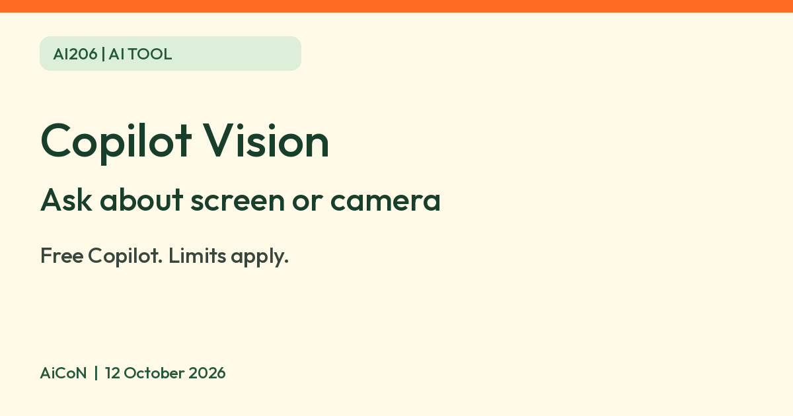

Microsoft Copilot Vision: ask about your screen or camera, what is free and what it stores
Microsoft says Copilot Vision answers questions about the windows you share or your phone camera. It does not click for you. Free use has limits.

What it is
Copilot Vision is a feature of the Microsoft Copilot app. Microsoft's support page describes it as a "second set of eyes": when you start a Vision session, Copilot can view the apps or browser windows you choose to share (or your phone camera) and answer questions about what it sees, by text or voice. It can show you which step to take next by highlighting part of the screen.
Is it free?
Microsoft's support page says Microsoft Copilot (free) "is available free of cost" at copilot.cloud.microsoft, in the Windows, Mac and mobile apps and in Edge. Its Vision page says subscribers to Microsoft 365 Personal, Family and Premium get extended Vision usage limits. That means the free version has limits, and we could not find the exact amount on Microsoft's pages. You must sign in to Copilot to use Vision.
Where it works
- Mac: Microsoft explicitly includes Mac in its Vision overview and privacy-notice section. The page does not provide separate Mac step-by-step instructions.
- Windows: share up to two apps or browser windows at a time. Microsoft says it works with any app, but cannot analyse harmful or DRM-protected content.
- Edge: it works with most sites, videos and PDFs, except harmful or adult content.
- Mobile: the Copilot app on iOS and Android uses your camera, after you give the app camera permission.
- Not available to commercial users signed in with an Entra ID work account, per Microsoft.
What it will not do
Microsoft says Vision answers questions and does not act for you. It will not click, enter text or scroll on your behalf.
Privacy
- Microsoft says Vision is only active when you start a session, and that images, audio and page content are not logged or stored, and are deleted when the session ends.
- Microsoft says Copilot's responses are stored to monitor unsafe use, and a transcript of your conversation goes into your chat history. It says this transcript is not used for training or personalisation, and you can delete your history at any time.
- The first time you use it, Copilot asks you to accept a privacy notice.
- AiCoN advice: close apps with private information before you share your screen, even though only the windows you choose are shared.
India
Microsoft says Copilot is available in over 170 markets, with exceptions such as China (excluding Hong Kong) and embargoed markets, and that new features may not reach every region at once. Its Vision page says Vision is available in all supported regions and languages. India is not named on the pages we read. Hindi is listed for both text responses and Copilot Voice. We did not test it from India.
How to try it
- Open the Copilot app and sign in with a personal Microsoft account.
- On Windows, click the glasses icon in the composer, then pick the app or window to share. Windows starts with text by default; switch Start with voice for a voice conversation. An orange outline marks the shared screen or app. On a phone, tap the glasses icon and allow camera access.
- Ask your question. Stop the session with Stop on Windows or the X on mobile. Microsoft says shared windows can still supply context during the session even when they are not in front.
In Edge, Microsoft says to sign in with a personal account, open Copilot, then select the Voice (waves) button. Vision stays active while you browse until you stop it with X, close the Copilot side pane or exit Edge.
Frequently asked questions
Can Vision control my computer?
No. Microsoft says it does not click, type or scroll for you.
Do I need to sign in?
Yes, for Vision.
Does Microsoft keep my screen images?
Microsoft says images, audio and page content are deleted when the session ends.
What changed since this post?
Four official Microsoft support pages rechecked 12 October 2026. Confirmed sign-in, two-app Windows sharing, mobile camera, no click/type/scroll actions, attributed privacy statements and paid extended limits. Added the Mac scope caveat, Windows text/voice controls and Edge steps. Hindi is listed for text and voice. Vision-specific Free allowance and India-specific availability were not verified; no product, privacy or India test was performed.
Sources: Using Copilot Vision, Copilot (free) vs Copilot in Microsoft 365, Getting started with Copilot on Windows, Supported regions and languages. Checked 12 October 2026.